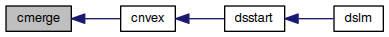

cmerge.f90 File Reference
Go to the source code of this file.
Functions/Subroutines | |
| subroutine | cmerge (n, a, i, m, h) |
| Given the upper convex hulls of two consecutive sets of pairs (j,A(j)), compute the upper convex hull of their union More... | |
Function/Subroutine Documentation
| subroutine cmerge | ( | integer, intent(in) | n, |
| double precision, dimension(*), intent(in) | a, | ||
| integer, intent(in) | i, | ||
| integer, intent(in) | m, | ||
| logical, dimension(*), intent(inout) | h | ||
| ) |
Given the upper convex hulls of two consecutive sets of pairs (j,A(j)), compute the upper convex hull of their union
- Note
- Borrowed from Computation of the Newton Polygon
- Parameters
-
[in] n Size of the vector a
[in] a vector defining the points (j,A(j))
[in] i abscissa of the common vertex of the two sets
[in] m the number of elements of each set is M+1
[in,out] h vector defining the vertices of the convex hull, i.e.,H(j) is .TRUE. if (j,A(j)) is a vertex of the convex hull. This vector is used also as output.
Definition at line 14 of file cmerge.f90.
Here is the call graph for this function:

Here is the caller graph for this function:
